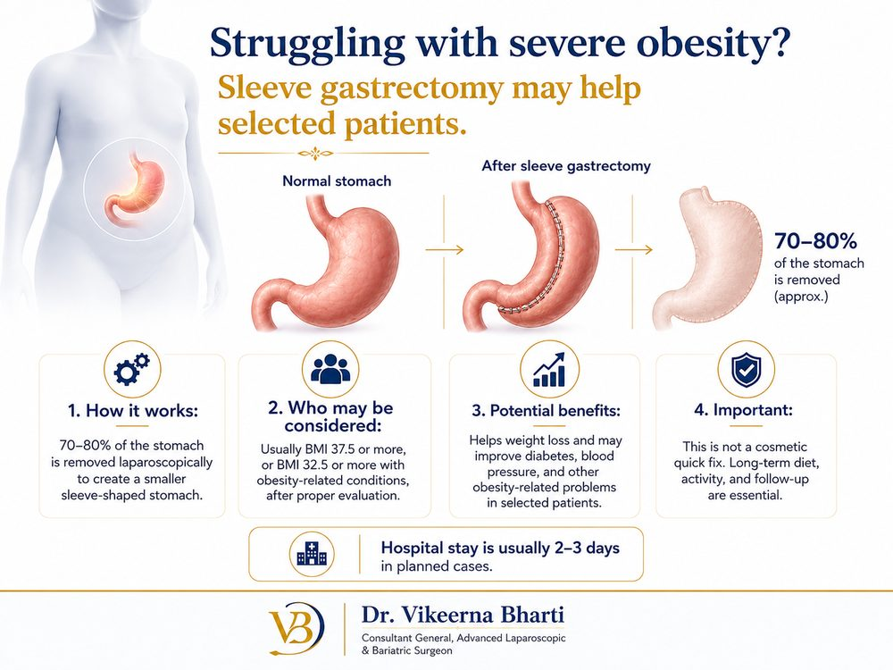
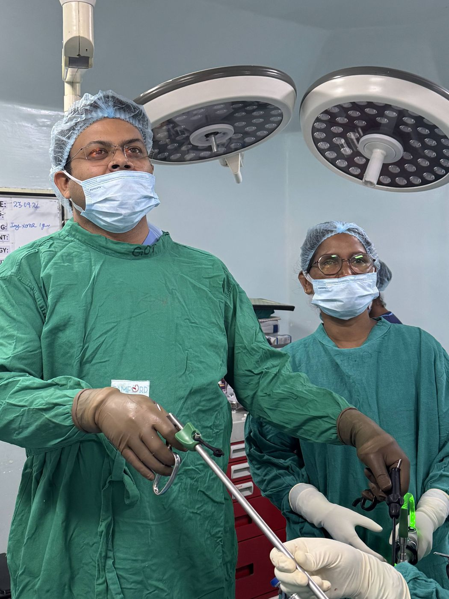

Obesity and metabolic assessment
The consultation considers obesity alongside conditions such as diabetes, sleep apnoea or high blood pressure. An operation does not guarantee a cure for these conditions.
Understand your options · Plan your visit
Discuss obesity treatment and laparoscopic sleeve gastrectomy with Dr. Vikeerna Bharti in Ranchi. Assessment, nutrition and long-term follow-up guide the plan.
मोटापा (ओबेसिटी) और उससे जुड़ी डायबिटीज़, ब्लड प्रेशर या नींद की समस्या के लिए जांच करवाएँ। दूरबीन से स्लीव गैस्ट्रेक्टॉमी के बारे में परामर्श लें।
Understanding the condition
Obesity is a long-term condition that affects blood sugar, blood pressure, joints, sleep and fertility. Asian guidelines use lower body-mass-index (BMI) thresholds than Western ones because health risks rise at lower weights in South Asian people.
Bariatric surgery is considered only after assessment by the treating team. It is a permanent change and needs long-term follow-up.

The procedure
Bariatric (obesity or metabolic) surgery is considered when diet, exercise and medical treatment have not given lasting results. It is a medical treatment, not a cosmetic one, and it needs a lifelong commitment to diet, vitamins, activity and follow-up.
In sleeve gastrectomy, about three-quarters of the stomach is removed through keyholes, leaving a narrow, banana-shaped tube. This limits how much can be eaten at one time and lowers hunger hormones. Dr. Bharti performs laparoscopic sleeve gastrectomy as the primary surgeon and runs the obesity and metabolic clinic at Samford Super Speciality Hospital.
Who is considered
Suitability is decided individually after medical, nutritional and anaesthetic assessment. As a general guide, Asian guidelines consider adults with a BMI of 37.5 or above, or 32.5 or above with conditions such as type 2 diabetes or high blood pressure.
The assessment also looks at how long the weight problem has been present, earlier weight-loss attempts, readiness for change and the ability to attend long-term follow-up.
What may change
In carefully selected patients, bariatric surgery is associated with weight loss and improvement in weight-related conditions. Results vary between people and depend on following the diet and follow-up plan.
The first consultation
Assessment considers weight history, associated health conditions, previous treatment and readiness for lasting changes. Surgery is one part of obesity care and is not suitable for everyone.
Bring available reports and scans, previous prescriptions, and any operation or discharge records. There is no need to upload medical reports to request a visit.
Bring a list of medicines and allergies, and the questions you would like answered.
Medical names, explained simply
The consultation considers obesity alongside conditions such as diabetes, sleep apnoea or high blood pressure. An operation does not guarantee a cure for these conditions.
Part of the stomach is removed to leave a narrower stomach. This is a permanent change and differs from gastric bypass.
Dr. Bharti established an obesity and metabolic clinic at Samford Super Speciality Hospital. Discuss nutrition support, preoperative assessment and the follow-up plan.
The procedure is chosen after assessment. A technique listed here is not suitable for every patient.
An individual treatment plan
Nutrition, physical activity, behavioural support and medicines may form part of an individual plan.
This operation makes the stomach smaller. Dr. Bharti’s operative experience includes laparoscopic sleeve gastrectomy.
Surgery requires ongoing attention to eating habits, nutrition, supplements where prescribed and follow-up. Weight loss varies between patients.
These are general options, not a recommendation for an individual patient. Your examination and reports guide the advice.
Already advised surgery?
Bring your reports and the recommendation you received. Understand your diagnosis, the options that may suit you and the questions to ask before deciding.
Planning ahead
Food texture and portion sizes change gradually after surgery under the care team’s guidance. Regular reviews and nutrition monitoring are essential; return to activity is individual.
Informed decisions
Discuss bleeding, staple-line leak, clots, narrowing, reflux, nutritional deficiencies and possible further surgery. Weight regain can occur.
Already advised a procedure? Plan a second opinion →Ask for a clear estimate
An estimate depends on the diagnosis, proposed operation and hospital care required. Bring existing reports so that the options and likely costs can be discussed.
Ask what is included and excluded, and how unplanned treatment would be charged.
Insurance and Ayushman Bharat: at Samford Super Speciality Hospital, where Dr. Bharti operates, cashless treatment is available under major health-insurance and TPA plans, Ayushman Bharat and the Jharkhand Rajya Karmi Swasthya Bima Yojana (state employees’ health insurance). Eligibility depends on your policy or card and is confirmed by the hospital insurance desk.
Your surgeon

Your questions
Write down anything you are unsure about and bring it to your consultation.
The cost depends on the hospital stay, anaesthesia, investigations, nutrition and follow-up care and the complexity of your case. A clear estimate is given after assessment. Insurance cover for bariatric surgery varies by policy; the Samford insurance desk can check your eligibility.
Yes. Dr. Vikeerna Bharti performs laparoscopic sleeve gastrectomy at Samford Super Speciality Hospital, Ranchi, for carefully assessed patients, with a structured obesity and metabolic clinic for preparation and follow-up.
Suitability is decided after a full assessment. As a general guide for Asian adults, a BMI of 37.5 or above, or 32.5 or above with conditions such as type 2 diabetes or high blood pressure, may be considered.
It does not cure diabetes. In some patients with obesity and type 2 diabetes, blood sugar control improves and medicine needs reduce after surgery; the degree of improvement varies.
The operation usually takes one to two hours, with a hospital stay of two to three days. Desk work is usually possible after two to three weeks.
No. The removed part of the stomach cannot be put back, which is discussed carefully before deciding.
Regular reviews, vitamin and mineral supplements, diet monitoring and lifestyle support for at least two years, with reviews at about 1 week, 1, 3, 6 and 12 months and then yearly.
Food moves from liquids to purées to soft food over several weeks. Walking is encouraged from the first day.
Weight-loss surgery is performed by surgeons experienced in bariatric surgery after assessment of BMI, weight-related conditions and earlier weight-loss attempts. Dr. Vikeerna Bharti performs laparoscopic sleeve gastrectomy and runs the obesity and metabolic clinic at Samford Super Speciality Hospital. Call 62060 91982.
Adults with severe obesity, particularly with weight-related conditions such as diabetes, after medical, nutritional and anaesthetic assessment. Suitability is decided individually.
Yes. Food is reintroduced in stages, from liquids to soft and then regular food, with smaller portions, vitamin supplements as prescribed and regular follow-up.
Coverage varies by policy. At Samford Super Speciality Hospital the insurance desk can check eligibility under your health-insurance or TPA plan.
Take the next step
Choose your clinic and prepare an appointment request. Review the message and press Send in WhatsApp.
You can visit during the listed OPD hours. For Garhwa, please check the visiting date before travelling.
Further reading
Content updated 10 October 2026. General patient information; an examination is needed for personalised advice.
A starting point for a conversation
Body mass index (BMI) relates weight to height. It is one part of an adult weight assessment and does not decide whether you need surgery.
For adults aged 18 and over. Do not use during pregnancy or where an eating disorder or a condition affecting height makes this measure unsuitable. BMI cannot distinguish muscle from body fat.
Explore obesity treatment and assessment →Calculated on your device. Your height, weight and result are not saved or sent by this calculator.
मोटापे की सर्जरी कोई कॉस्मेटिक इलाज नहीं है। यह उन वयस्क मरीजों के लिए है जिनका वजन बहुत अधिक है और जिन्हें डायबिटीज़, बीपी, नींद में सांस रुकना या जोड़ों की समस्या जैसी बीमारियाँ हैं। पूरी जांच के बाद डॉ. विकीर्ण भारती सैमफोर्ड हॉस्पिटल, रांची में दूरबीन विधि से स्लीव गैस्ट्रेक्टॉमी करते हैं; ओबेसिटी और मेटाबॉलिक क्लिनिक में ऑपरेशन के बाद लंबा फॉलो-अप, डाइट और विटामिन की देखरेख होती है। परामर्श: बरियातू (मणिपाल हॉस्पिटल के पास) सोमवार–शनिवार सुबह 9–10 और शाम 5–7:30 बजे; सैमफोर्ड सुपर स्पेशियलिटी हॉस्पिटल, कोकर सुबह 11 से शाम 5 बजे। संपर्क: 62060 91982।